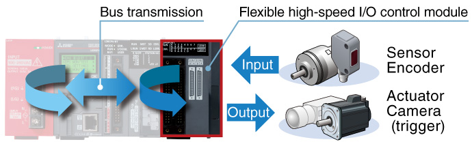
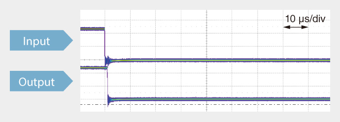
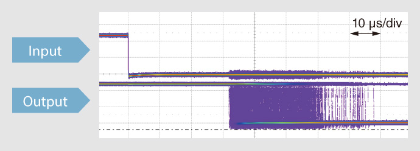
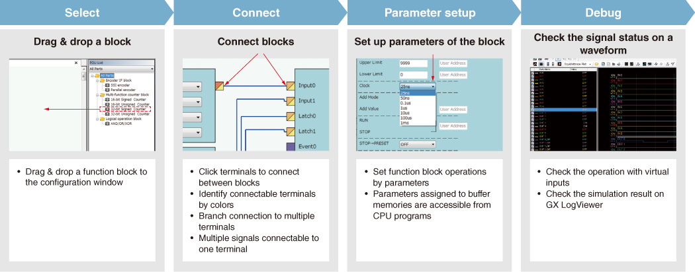
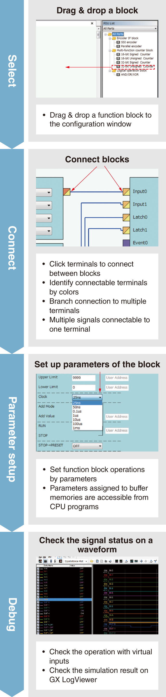
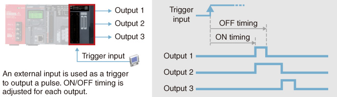
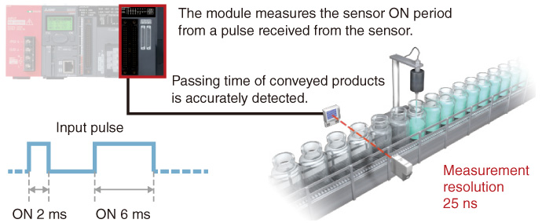
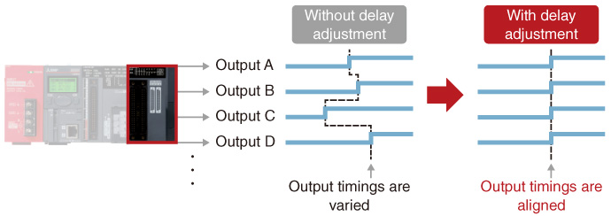

Controllers MELSEC-L Series
Product features -Flexible I/O/High-Speed Counter-


Fast and stable I/O response
High-speed response is realized with the hardware performance asynchronous to the CPU and control bus.
- LD40PD01 is equipped with an external I/O interface and FPGA*1. This feature enables LD40PD01 to perform high-speed control, without being restricted by the CPU scan time and control bus performance. Dedicated configuration tool is also available to pre-check the product operation, further reducing the startup time.
- I/O response is stable as its processing speed only fluctuates in nanoseconds.
- *1.Abbreviation of Field Programmable Gate Array. FPGA is an LSI that can be programmed after the manufacture.

■Flexible high-speed I/O control module

■Existing programmable controller (LCPU embedded I/O + interrupts)

Easy FPGA setup with dedicated configuration tool<sup>*2</sup>
The design process associated with FPGA (HDL programming, logic synthesis, timing analysis) is no longer required, drastically reducing the development time. The configuration tool is also useful to pre-check the product operation, further reducing the startup time.

- *2.For further information on “Flexible High-Speed I/O Control Module Configuration Tool”, please contact your local Mitsubishi sales representative.
Supporting versatile applications
The flexible high-speed I/O control module realizes a wide range of controls including speed measurement, adjusted pulse output, ratio setting/distributed output, PWM control, and cam switch control.
Pulse adjustment
- ON/OFF timings are finely adjusted down to 25 ns by using trigger inputs.
- Fluctuation of ON/OFF operation is minimized down to nanoseconds, enabling highly precise control.

Speed measurement
- In addition to ON and OFF width, measurement in different conditions is possible, such as ON timing difference between sensors.
- The measurement increment of minimum 25 ns realizes highly accurate measurement.

Delay output
- Output timing delays are adjusted for each point, minimizing output variations.
